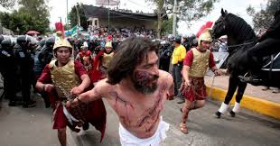

Semana Santa

A la Semana Santa se le llamaba en un principio “La Gran Semana”. Ahora se le llama Semana Santa o Semana Mayor y a sus días se les dice días santos. Esta semana comienza con el Domingo de Ramos y termina con el Domingo de Pascua. Vivir la Semana Santa es acompañar a Jesús con nuestra oración, sacrificios y el arrepentimiento de nuestros pecados. Asistir al Sacramento de la Penitencia en estos días para morir al pecado y resucitar con Cristo el día de Pascua.

Celebramos la entrada triunfal de Jesús a Jerusalén en la que todo el pueblo lo alaba como rey con cantos y palmas. Por esto, nosotros llevamos nuestras palmas a la Iglesia para que las bendigan ese día y participamos en la misa.

Este día recordamos la Última Cena de Jesús con sus apóstoles en la que les lavó los pies dándonos un ejemplo de servicialidad. En la Última Cena, Jesús se quedó con nosotros en el pan y en el vino, nos dejó su cuerpo y su sangre. Es el jueves santo cuando instituyó la Eucaristía y el Sacerdocio. Al terminar la última cena, Jesús se fue a orar, al Huerto de los Olivos. Ahí pasó toda la noche y después de mucho tiempo de oración, llegaron a aprehenderlo.

Ese día recordamos la Pasión de Nuestro Señor: Su prisión, los interrogatorios de Herodes y Pilato; la flagelación, la coronación de espinas y la crucifixión. Lo conmemoramos con un Via Crucis solemne y con la ceremonia de la Adoración de la Cruz.
Se recuerda el día que pasó entre la muerte y la Resurrección de Jesús. Es un día de luto y tristeza pues no tenemos a Jesús entre nosotros. Las imágenes se cubren y los sagrarios están abiertos. Por la noche se lleva a cabo una vigilia pascual para celebrar la Resurrección de Jesús. Vigilia quiere decir “ la tarde y noche anteriores a una fiesta.”. En esta celebración se acostumbra bendecir el agua y encender las velas en señal de la Resurrección de Cristo, la gran fiesta de los católicos.
Es el día más importante y más alegre para todos nosotros, los católicos, ya que Jesús venció a la muerte y nos dio la vida. Esto quiere decir que Cristo nos da la oportunidad de salvarnos, de entrar al Cielo y vivir siempre felices en compañía de Dios. Pascua es el paso de la muerte a la vida.
Es la fiesta central del cristianismo, en la que se conmemora, de acuerdo con los evangelios canónicos, la resurrección de Jesús al tercer día después de haber sido crucificado. La Pascua marca el final de la Semana Santa, en la que se conmemora la crucifixión y muerte de Jesús. A la Semana Santa le sigue un período de cincuenta días llamado Tiempo pascual, que termina con el Domingo de Pentecostés.
La Pascua es una fiesta que varía de año a año en relación con nuestros calendarios, pues está basada en el calendario Judío que se guía por la luna. El día central para calcular la Pascua y la cuaresma es el día de la Resurrección del Señor.
Para saber la fecha de la cuaresma y su inicio, el miércoles de ceniza, debemos contar 40 días hacia atrás desde el domingo anterior al domingo de Resurrección (domingo de ramos o de palmas). Después del domingo de Resurrección se cuentan 40 días hasta la Ascensión (aunque la fiesta se celebra el Domingo siguiente); una semana después de la Ascensión se celebra Pentecostés (aunque bíblicamente ocurre a los 50 días de la Resurrección).
Capilla de San Isidro Labrador en la Colonia Valle Sur en Atlixco.Pue
Alfombra artesanal de un cáliz en la colonia Valle Sur
Representación de la últma cena en el Seminario Agustino en la colonia Valle Sur
Asi se celebró el Sabado Santo en la Colonia Valle Sur
Viacrucis de Viernes Santo en la colonia Valle Sur
En muchas ciudades de todo el mundo, cada año se lleva a cabo la representación del Vía Crucis y en nuestro país, en todo el territorio nacional las principales calles de las localidades son escenarios de la conmemoración de la Semana Santa. Entre las representaciones de la Pasión de Cristo que se realizan en México, sin duda la más añeja, llena de fervor y tradición es la que se lleva a cabo en el Cerro de la Estrella, en la delegación Iztapalapa, durante la Semana Mayor.

Los Festejos de Semana Santa de Iztapalapa son Patrimonio Cultural Intangible de la Ciudad de México. Desde hace 172 años, millones de mexicanos y turistas extranjeros han rememorado en el Cerro de la Estrella de Iztapalapa, la pasión de Cristo, la historia de cómo el hijo de Dios sufrió por el perdón de los pecados de la humanidad.
Desde 1843 en el Cerro de la Estrella o Huizachtepetl se conmemora la Pasión de Cristo. Diez años atrás, en 1833, los pobladores afectados y preocupados por la epidemia que azolaba a su comunidad,
 invocaron las imágenes de Cristo que se veneraban en sus respectivas ermitas de los barrios originales de Iztapalapa para que terminara la ola de muerte que se cernía entre sus familiares.
A los pocos días, según cuenta la historia, la mortandad por el cólera cesó.
Además del milagro de haber parado la epidemia, en San Lorenzo, uno de los pueblos de Iztapalapa, el Cristo invocado los favoreció con un agua milagrosa, pues del pie de un ahuehuete brotó un manantial y con el agua que de ahí emanó curaron a los enfermos y a la gente de los pueblos del sur
invocaron las imágenes de Cristo que se veneraban en sus respectivas ermitas de los barrios originales de Iztapalapa para que terminara la ola de muerte que se cernía entre sus familiares.
A los pocos días, según cuenta la historia, la mortandad por el cólera cesó.
Además del milagro de haber parado la epidemia, en San Lorenzo, uno de los pueblos de Iztapalapa, el Cristo invocado los favoreció con un agua milagrosa, pues del pie de un ahuehuete brotó un manantial y con el agua que de ahí emanó curaron a los enfermos y a la gente de los pueblos del sur
La Semana Santa en Roma empieza el Domingo de Ramos, con la Misa de bendición ofrecida por el Papa en Plaza San Pedro a las 9:30am. Como es ya tradición, al terminar la misa, el papa regala un mensaje especial a los jóvenes del mundo: el “Angelus”. El Lunes Santo, El Papa realiza una conmemoración al papa precedente Juan Pablo II, con una misa solemne a las 6pm siempre en Plaza San Pedro. El Jueves Santo , después de algunos días de retiro, el papa ofrecerá una Misa matutina (9:30am) bastante curiosa: La llaman “La Misa del Crisma”. En esta misa el papa bendice el Olio Santo (crisma) que sirve para uno de los sacramentos de la Iglesia Católica. El significado de esta misa es la unión de la Iglesia Católica como un único cuerpo y sentir al rededor del mundo. En la tarde, a las 6pm, se lleva a cabo una de las misas más bellas: La Misa de la Cena del Señor, donde se recuerda la última cena de Jesús con sus discípulos, donde según la doctrina católica, Jesús instauró los sacramentos, el sacerdocio y el mandamiento del Amor (“amaos los unos a los otros como yo los he amado a ustedes”). Una de las cosas más carismáticas de esta misa es el rito del “Lavado de los pies”. Justamente después de terminada la misa, el Papa lava los pies a doce personas elegidas entre los presentes (que representan a los doce apóstoles de Jesús) mientras se levantan cánticos religiosos. Una vez terminado el servicio litúrgico, muchas personas se quedan en la Plaza en adoración durante toda la noche hasta el día siguiente. El Viernes Santo. Durante este día no se celebran misas hasta la Vigilia Pascual. Sin embargo en la Basílica de San Pedro, y en las principales Iglesias de Roma cantan muchísimos coros durante todo el día. Al Caer la noche del Viernes, se lleva a cabo uno de las procesiones más solemnes y hermosas del mundo: el famoso “Via Crucis” guiado por el Papa, donde se reconstruye y conmemora el camino doloroso de Jesús hasta su crucifixión. El Via Crucis parte del interior del Coliseo y termina en las Colinas del Palatino. El Via Crucis es uno de los eventos más concurrido de las celebraciones de la Semana Santa en Roma. Seréis afortunados si lográis participar en ella. Sin embargo, es muy fácil seguirla desde los alrededores. No olvidéis las Antorchas! Sábado Santo Al igual que el Viernes Santo, el día Sábado no se realizan Misas hasta la noche. Este día podréis admirar las iglesias Romanas en modo diferente pues ninguna de ellas tendrá luces encendidas (tampoco velas), y no se entonan cantos. Este silencio viene a simbolizar la espera atenta del Anuncio de la resurrección de Jesús. En la noche (medianoche) se celebra la Misa de Vigilia, celebrada por el Papa en plaza San Pedro. Es una Misa muy hermosa y alegre, donde se bendicen los elementos naturales, y se elevan hermosos cánticos de Alegría. Domingo de Resurrección En este día se celebra la misa más concurrida del mundo: El Papa se asoma en su balcón que da a la Plaza San Pedro a las 10:15 y ofrece el servicio que termina con el famoso “Urbi et Orbi”, el mensaje “para la ciudad y para el mundo” donde el Papa ofrece redención y bendiciones a todos los presentes.
No hay nada como vivir la Semana Santa en Jerusalén. Celebrar los grandes eventos de la historia de salvación y de la vida de Jesús en los mismos lugares en los que ocurrieron es una experiencia de fe conmovedora e inolvidable para todos los creyentes.
Oficialmente, Semana Santa comienza al conmemorarse la entrada de Jesús en Jerusalén el Domingo de Ramos (1 de abril), con la misa matinal de las 8 en la Iglesia del Santo Sepulcro y la tradicional procesión de Palmas durante la tarde. Más tarde, a las 14.30, miles de cristianos de todo el mundo marcharán jubilosamente desde Betfagé, rezando y cantando en todos los idiomas, descendiendo por la ladera occidental del Monte de los Olivos en camino a la Ciudad Vieja, a través del valle de Kidrón.
El Jueves Santo, el Patriarca Latino de Jerusalén celebrará a las 8 de la mañana la Institución de la Eucaristía en el Santo Sepulcro y por la tarde, a las 15.30, los Franciscanos efectuarán su peregrinación tradicional al Cenáculo
 (la Sala Superior) en el Monte Sion. Por la noche, a partir de las 21 horas, peregrinos y cristianos locales velarán con Jesucristo durante una hora sagrada de meditación en el Huerto de Getsemaní, seguida de una procesión a la luz de velas a la iglesia de San Pedro en Gallicantu, que según la tradición es el lugar en el que Jesús pasó la noche después de ser arrestado.
En Viernes Santo, a las 8 de la mañana, se conmemorarán la Pasión del Señor y la crucifixión en el Calvario, seguidas del Vía Crucis en la Vía Dolorosa a las 11.30, liderado por el Custos (Custodio) franciscano de Tierra Santa. Posteriormente, a las 8.10 de la mañana, se celebrará el funeral de Cristo en el Sepulcro, un evento exclusivo de la Iglesia de Jerusalén, que reconstruye la deposición del cuerpo de Cristo en la tumba.
La tan esperada Vigilia Pascual, el punto culminante de la semana, se celebrará el sábado a las 7.30 de la mañana en la Basílica de la Resurrección, seguida de la entrada solemne del Patriarca a las 15.30 y e oficios religiosos vespertinos a las 18 horas.
El Domingo de Resurrección, se celebrará una misa a las 8 de la mañana, con una procesión alrededor de la tumba de Jesús y la procesión diaria, que tendrá lugar a las 17 horas.
Finalmente, el Lunes de Pascua, se conmemorará el encuentro de Jesús con los dos discípulos en el camino a Emaús, con la celebración de una misa en el Santo Sepulcro a las 8 de la mañana y también otra oficiada por el Custos (Custodio) en Emaús a las 10.
(la Sala Superior) en el Monte Sion. Por la noche, a partir de las 21 horas, peregrinos y cristianos locales velarán con Jesucristo durante una hora sagrada de meditación en el Huerto de Getsemaní, seguida de una procesión a la luz de velas a la iglesia de San Pedro en Gallicantu, que según la tradición es el lugar en el que Jesús pasó la noche después de ser arrestado.
En Viernes Santo, a las 8 de la mañana, se conmemorarán la Pasión del Señor y la crucifixión en el Calvario, seguidas del Vía Crucis en la Vía Dolorosa a las 11.30, liderado por el Custos (Custodio) franciscano de Tierra Santa. Posteriormente, a las 8.10 de la mañana, se celebrará el funeral de Cristo en el Sepulcro, un evento exclusivo de la Iglesia de Jerusalén, que reconstruye la deposición del cuerpo de Cristo en la tumba.
La tan esperada Vigilia Pascual, el punto culminante de la semana, se celebrará el sábado a las 7.30 de la mañana en la Basílica de la Resurrección, seguida de la entrada solemne del Patriarca a las 15.30 y e oficios religiosos vespertinos a las 18 horas.
El Domingo de Resurrección, se celebrará una misa a las 8 de la mañana, con una procesión alrededor de la tumba de Jesús y la procesión diaria, que tendrá lugar a las 17 horas.
Finalmente, el Lunes de Pascua, se conmemorará el encuentro de Jesús con los dos discípulos en el camino a Emaús, con la celebración de una misa en el Santo Sepulcro a las 8 de la mañana y también otra oficiada por el Custos (Custodio) en Emaús a las 10.
La Semana Santa también ha llegado a China, sobre todo al pequeño pueblo de XianXian, corazón de una de las regiones con más cristianos del país. El Viernes Santo, sus fieles se han congregado en la catedral para hacer el camino a la cruz, una tradición que aquí tiene más de un siglo de historia. Lu Pong nos cuenta su experiencia: "Vengo desde que tengo 16 años. Para mí es muy importante porque pienso en todas las cosas que he hecho mal durante el año; es como una confesión, un análisis de mi mismo". La cruz la ha empezado a cargar el obispo de Xianxian, nombrado por la Iglesia Patriótica china fiel al Partido Comunista y no al Vaticano. Le acompañaban los más de 129 sacerdotes que conforman esta diócesis de 80.000 fieles. Esta procesión quizá no tiene la puesta en escena de otras que hay en nuestro país, pero para los católicos chinos es una de las únicas oportunidades que tienen para demostrar su fe en público. Cada año son más los chinos que buscan refugio en la religión. Según los expertos, el capitalismo ha traído riqueza pero también "una profunda crisis espiritual" en la población. Aunque no existen cifras oficiales, se estima que en China hay más de 120 millones de cristianos.